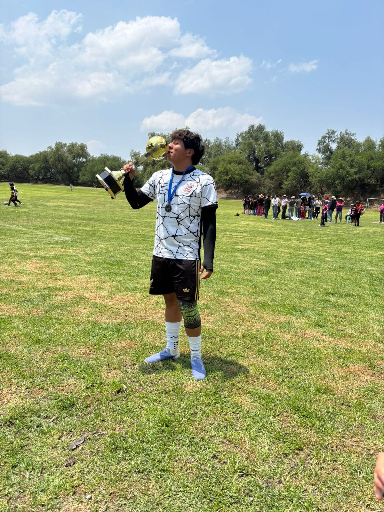

JUGADA DESTACADA
▶
Tu pasión en movimiento
Un momento que merece quedarse.
Hay jugadores buenos...
Un pequeño espacio para alguien que merece saber lo orgullosa que estoy de él. 💙
Descubre tu homenaje ↓Cada video y cada fotografía guardan un pedacito de algo que te apasiona.
Un momento que merece quedarse.
Lo que te gusta hacer.

UN RECUERDOUn lugar especial para ti.
Hecho con cariño, para alguien que merece sentirse orgulloso de lo que hace. 💙
Sé que te gusta el fútbol, sé que juegas bien y me hace feliz saber que tienes algo que te apasiona.
Todavía no he tenido la oportunidad de verte jugar en persona, de verte correr detrás del balón ni de estar entre las gradas animándote. Pero eso no significa que no pueda sentir orgullo de ti.
Me gusta saber que tienes algo que disfrutas, algo en lo que puedes esforzarte y seguir creciendo. Quiero que disfrutes cada partido, que aprendas de cada experiencia y que nunca pierdas las ganas de hacer lo que te gusta.
Quizá algún día pueda estar ahí, viéndote jugar, buscándote entre todos los jugadores y sintiendo esos nervios bonitos de querer que todo te salga bien.
Y aunque todavía no sé cómo será ese momento, sé que me haría muchísima ilusión vivirlo contigo.
Todavía no te he visto jugar, viejito, pero ya estoy orgullosa de ti.
”No necesitas ganar todos los partidos para hacerme sentir orgullosa. Quiero verte disfrutar, crecer y perseguir aquello que te hace feliz. Siempre voy a desear que te vaya bonito, dentro y fuera de la cancha. 💙
Algunas se sienten y ya. ⚽
Estadísticas no oficiales, pero sentimientos muy reales. ♡
PARA TI, MI VIEJITO
Espero poder regalarte una sonrisa, aplaudirte y hacerte saber que estoy ahí, feliz de verte haciendo algo que te gusta.
No importa cómo termine el partido. Para mí, lo bonito será poder vivir ese momento y verte disfrutarlo.
Hasta que llegue ese día, aquí tienes un pedacito de todo el orgullo que siento por ti. 💙